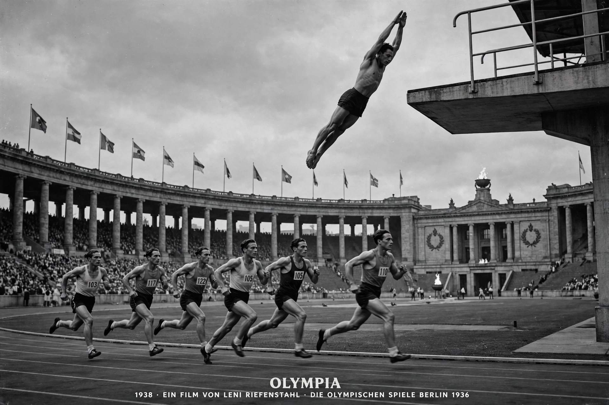

Olympia is a 1938 German documentary film written, directed and produced by Leni Riefenstahl, documenting the 1936 Summer Olympics held in Berlin. Released in two parts — Olympia 1. Teil — Fest der Völker (Festival of the Nations) and Olympia 2. Teil — Fest der Schönheit (Festival of Beauty) — it pioneered many techniques now standard in sports filming, including tracking shots, slow motion, underwater cameras and extreme close-ups, while remaining controversial as a work commissioned by Nazi Germany.
| Olympia | |
|---|---|
 The celebrated diving sequence | |
| Directed by | Leni Riefenstahl |
| Music by | Herbert Windt |
| Cinematography | Numerous; incl. Hans Ertl, Walter Frentz |
| Release date | 20 April 1938 |
| Country | Germany |
| Language | German |
Commissioned by the German Olympic committee and financed through Riefenstahl's Olympia-Film GmbH with state backing, the production employed dozens of cameramen and developed new equipment: cameras on rails alongside the track, in balloons and pits, and in waterproof housings. Some 400 km of film were shot and edited over about 18 months. The film premiered on Hitler's 49th birthday, 20 April 1938, and won the Coppa Mussolini for best film at the 1938 Venice Film Festival.
The opening prologue dissolves from classical Greek ruins and statuary into modern athletes, linking the Third Reich symbolically to antiquity. The diving montage of Part Two, the marathon coverage and the slow-motion studies of bodies in motion were widely admired; Time later named Olympia among the 100 greatest films. Critics continue to debate how far its aesthetic glorification of the body and its state sponsorship make it propaganda, notwithstanding its even-handed celebration of athletes such as Jesse Owens and its relatively limited explicit party content.
Riefenstahl toured the United States in late 1938 to promote the film, but after Kristallnacht American distribution collapsed. Olympia nonetheless set the template for Olympic filmmaking and sports broadcasting for decades.